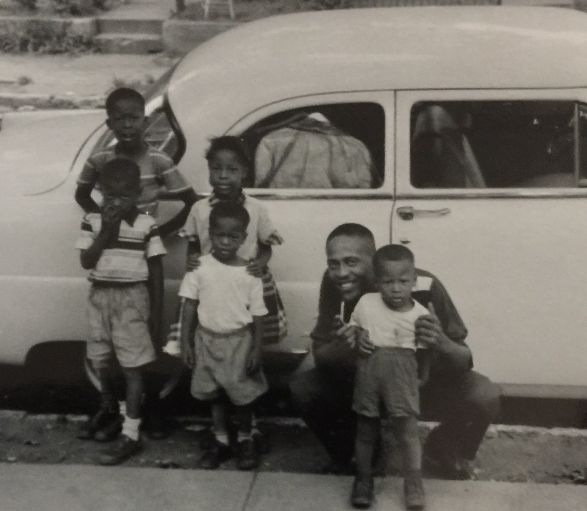
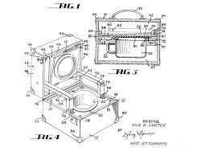

About
Iula O. Carter was born in Dayton, Ohio into a family that was rich with love, wisdom, and God. As a young person she was bounded by heart trouble that made her and her family believe she wouldn’t even make it to her senior year graduation.Iula attended church and Sunday school every Sunday and bible study on Wednesdays, which is something she continued to do until her dealth in 2021. While attending Roosevelt High School, Iula experienced a pivotal moment when she felt unwell and turned to prayer for strength and healing. Iula described this feeling as a “Tiredness in her chest” and she stated during her interview that “I went up into my bedroom, I got on my knees and I prayed to the good lord, and I told him I wanted to live.” This moment marked a turning point in her life, inspiring her not just to survive but to truly live.
Once she completed high school, Iula attended classes at Sinclair Business College, Cedarville Bible College, and Wright State University
While in still in her late teenage years Iula met William B Carter. She had prayed to God to meet a nice young man and to start a family while at a doctor’s appointment for her heart. Iula and William had known each other for years. William lived about 3 streets over from her, they also had attended the same schools together. After a few years of dating Iula and William got married in 1947. Despite the odds, and doctors telling her she couldn’t bare children, in 1948 they welcomed their first son into the world. William Prilly Carter. Then after him she had 5 other children, Samuel, James, Peggy, Teresa, and Charles Cater. Mrs. Carter had said “I wanted 3 children, but he [the lord] blessed me with 6…” While 3 of her children were in college, Mr. Carter had to go overseas to pay for schooling. A dedicated mother and wife, Iula also found time to support other women whose loved ones were serving overseas. Her compassion and strength inspired others and left a lasting impact on her community.
Iula always loved to travel with her 6 children and husband, but road trips were difficult since at least one of the kids would always have to use the bathroom while they were on the road. Mrs. Carter was thinking of ways to eliminate this bathroom issue and in the early 1950’s she came up with the idea of a portable potty. She had the idea to invent this portable nursery chair which would turn into a small suitcase.
